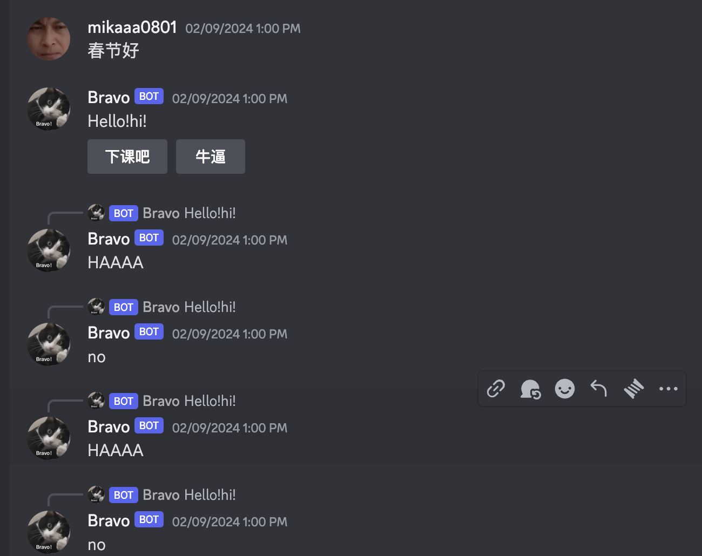
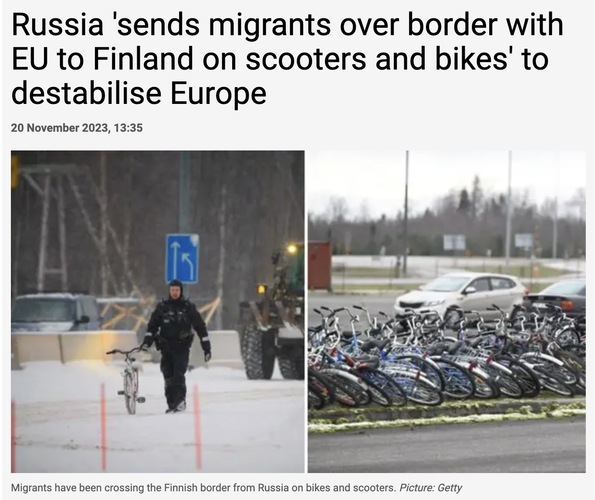
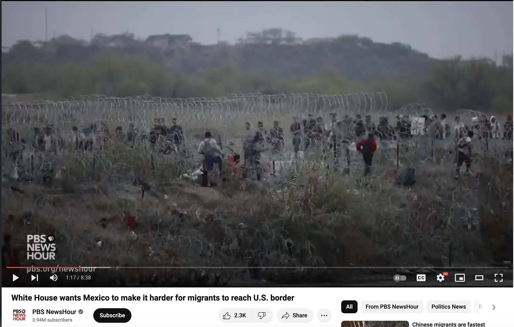
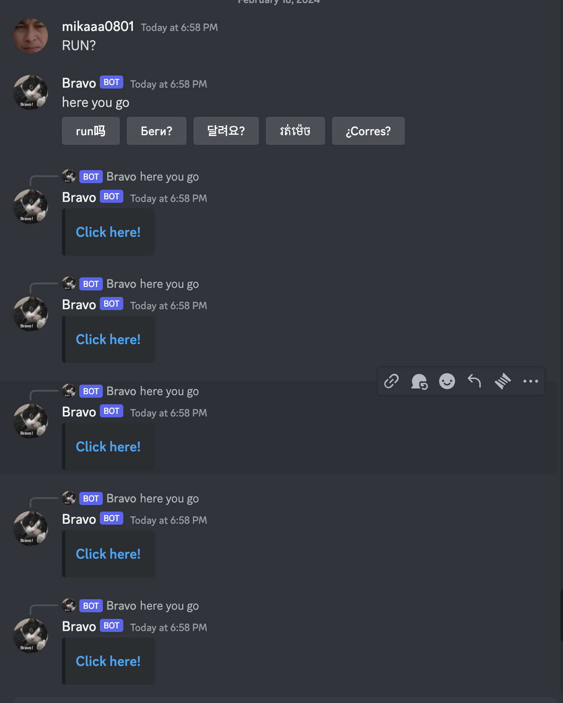

First step! Follow the tutorial in class to build a simple robot that can respond to me. Second step, click the button to make it display information.
Second step, click the button to make it display information. I added two more buttons (NIUBI means great in Chinese).

Then I started playing with it. For example, when I input "春节好" (Spring Festival greetings), it replies to me with "下课吧！和 Niubi" (Let's finish class! and Great). If I click on "下课吧" (Finish class), it replies with "No."
I started running a new mode to play with it. Recently, I've been reading news about illegal North Korean immigrants fleeing to China, and it inspired me. If I design a question-and-answer machine about "I wanna RUN" what would it be like? The first time I failed, and then Jessica replied to me in the group, haha.
I collected information on currently popular countries and news regarding illegal immigration worldwide. Among them are China, North Korea, Russia, Cambodia, and Mexico.
 Then I put these websites into clickable buttons. When you input the passphrase "RUN?" the machine provides translations of the word "run" in various languages. Then, by clicking on the button of your country's language, corresponding websites and news appear.
Okay，so, RUN???
RUN???
RUN???
RUN???
RUN??????????????????????????????????????